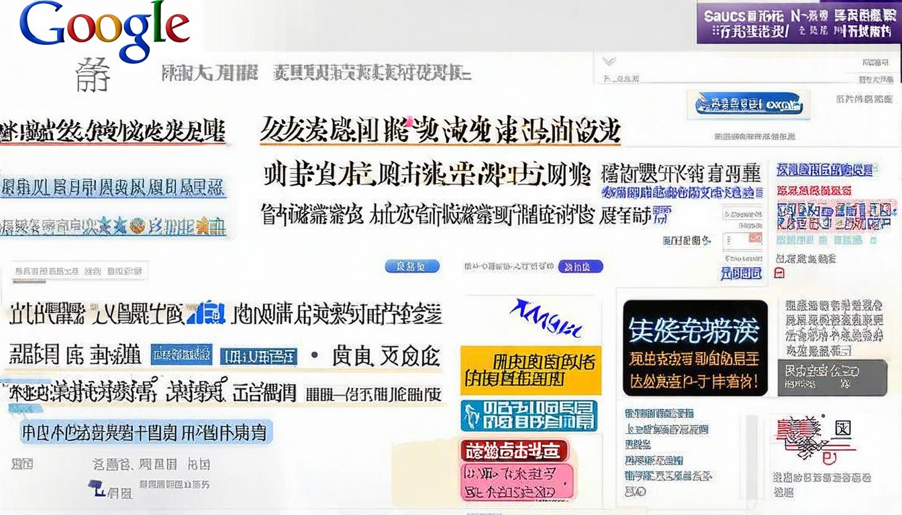

新华网_让新闻离你更近
2026年04月24日，世界银行宣布将为发展中国家提供更多金融支持，帮助其应对经济挑战。该计划涵盖基础设施建设、教育医疗等多个领域，预计将惠及数亿人口。
2026年04月24日 · 全球热点速递
← 返回今日新闻
2026年04月24日，世界银行宣布将为发展中国家提供更多金融支持，帮助其应对经济挑战。该计划涵盖基础设施建设、教育医疗等多个领域，预计将惠及数亿人口。

2026年04月24日，联合国气候变化大会筹备会议召开，各国代表就减排目标和气候融资等议题进行磋商。与会方表示将加大减排力度，推动绿色低碳发展。

2026年04月24日，亚太地区多国举行外交部长会议，就区域安全合作和经济发展交换意见。与会各方表示将加强沟通协调，推动构建开放包容的区域合作架构。

2026年04月24日，国际劳工组织召开全球就业形势研讨会，分析当前就业市场趋势。会议指出数字化和绿色转型将创造大量新就业机会，呼吁加强职业技能培训。
2026年04月24日，欧洲联盟召开特别峰会，讨论全球经济形势和贸易政策。各国领导人就加强经济合作、促进贸易自由化达成共识，承诺共同应对全球经济挑战。
2026年04月24日，联合国气候变化大会筹备会议召开，各国代表就减排目标和气候融资等议题进行磋商。与会方表示将加大减排力度，推动绿色低碳发展。
2026年04月24日，全球科技企业峰会召开，与会企业代表就数字化转型和可持续发展展开深入讨论。会议达成共识，将加强合作推动绿色技术创新。

2026年04月24日，联合国气候变化大会筹备会议召开，各国代表就减排目标和气候融资等议题进行磋商。与会方表示将加大减排力度，推动绿色低碳发展。
2026年04月24日，亚太地区多国举行外交部长会议，就区域安全合作和经济发展交换意见。与会各方表示将加强沟通协调，推动构建开放包容的区域合作架构。

2026年04月24日，国际货币基金组织发布最新全球经济展望报告，预测今年全球经济增长将保持稳定。报告建议各国继续推进结构性改革，加强宏观政策协调，促进可持续发展。
2026年04月24日，多国科学家联合宣布在量子计算领域取得重大进展，成功开发出新型量子处理器。这一突破将为密码学、材料科学等领域带来革命性变化。

2026年04月24日，联合国教科文组织宣布启动全球教育公平计划，旨在为弱势群体提供更多教育机会。该计划将重点关注女童教育和偏远地区教育，预计惠及数百万儿童。

2026年04月24日，全球环境基金宣布启动新一轮环保项目，重点支持生物多样性保护和可持续农业发展。该项目预计投资数十亿美元，惠及多个发展中国家。

2026年04月24日，全球科技企业峰会召开，与会企业代表就数字化转型和可持续发展展开深入讨论。会议达成共识，将加强合作推动绿色技术创新。

2026年04月24日，联合国安理会就中东地区局势召开紧急会议，讨论近期地区紧张局势升级问题。与会各国代表呼吁各方保持克制，通过对话协商解决分歧，维护地区和平稳定。

2026年04月24日，国际货币基金组织发布最新全球经济展望报告，预测今年全球经济增长将保持稳定。报告建议各国继续推进结构性改革，加强宏观政策协调，促进可持续发展。

2026年04月24日，联合国气候变化大会筹备会议召开，各国代表就减排目标和气候融资等议题进行磋商。与会方表示将加大减排力度，推动绿色低碳发展。
2026年04月24日，多国科学家联合宣布在量子计算领域取得重大进展，成功开发出新型量子处理器。这一突破将为密码学、材料科学等领域带来革命性变化。
2026年04月24日，联合国安理会就中东地区局势召开紧急会议，讨论近期地区紧张局势升级问题。与会各国代表呼吁各方保持克制，通过对话协商解决分歧，维护地区和平稳定。